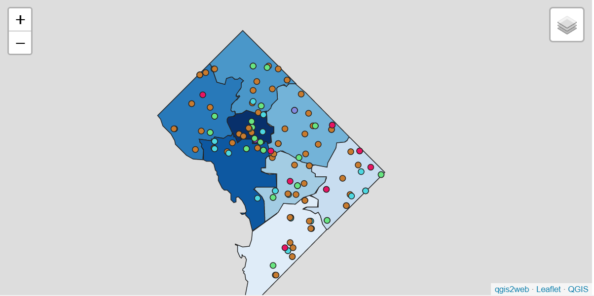

1 / 3


3 / 3

The National Institutes of Health (NIH) campus is located in Bethesda, Maryland. Bethesda is an unincorporated, census-designated place in southern Montgomery County, Maryland, United States, located just northwest of the U.S. capital of Washington, D.C. It takes its name from a local church, the Bethesda Meeting House (1820, rebuilt 1849), which in turn took its name from Jerusalem's Pool of Bethesda. The National Institutes of Health main campus and the Walter Reed National Military Medical Center are in Bethesda, as are a number of corporate and government headquarters
The National Institutes of Health (NIH) campus